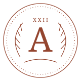

Маленькая пауза.
Новый взгляд.
Колода загружается. Если это занимает больше нескольких секунд, проверьте соединение.

ПУТЬЕсли сам адрес не открывается, смените сеть или используйте альтернативную демо-ссылку из отчёта проверки. Перезагрузка интерфейса не устраняет блокировку хостинга.
Колода загружается. Если это занимает больше нескольких секунд, проверьте соединение.